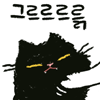
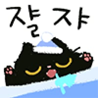

48 · 23 · 12 시간 전 · 원문
수집 당시 댓글 23개
유아학교 · 14 시간 전
메카다나카 · 14 시간 전
부릉부릉
왜용 · 14 시간 전
엔진음이 다르네 ㅋㅋㅋㅋㅋ
주가하락 · 13 시간 전
킹돌이 · 13 시간 전
어우 크다ㅋㅋㅋ
제육볶음맛있다 · 13 시간 전

장래희망휴먼 · 13 시간 전
저러고 안아달라면서 뽀뽀피하는게 ㄹㅇ고양이답네
율리룰 · 13 시간 전
누가 머스탱 시동걸어놨냐
번쩍필살검무 · 13 시간 전
아 푸짐애 ㅋㅋㅋㅋㅋㅋㅋㅋㅋ 엉덩이흘러내리는거봐라
샴고양이가 은근 파양율이 높다던데주인을 좋아해도 너무좋아해서 하루종일 앵기느라 혼자사는집에서 키우기 너무 빡새다곤하드라
↳ 답글 · 사자가라이언 · 12 시간 전
진짜 엄청 앵김.혼자사는 집이 아니라 네가족에 고양이도 하나 더 있는데 나한테만 앵김 ㅋㅋㅋㅋㅋ뭔 산책 안나가는 강아지 수준임.
깨붕잉 · 13 시간 전
부르릉~~
이주린 · 13 시간 전
나도 샴고양이가 되어서 안기고 싶다
↳ 답글 · 어휴극혐 · 12 시간 전
이리로들어오도록해
통합협상 · 13 시간 전
미친 왤케커 ㅋㅋㅋㅋㅋㅋ
달려가자 · 13 시간 전
샴냥이 폼 미쳤다
동전 · 13 시간 전
돼오오옹
7년차대학원생 · 12 시간 전
샴홍만이네 샴 원래 작은데..
뽀롱뽀롱뾰로로 · 12 시간 전
ㅋㅋ 냥보르기니 ㅋㅋ
닭칼국수 · 12 시간 전
되게 푸짐하네 ㅋㅋㅋㅋ
트라진 · 11 시간 전
왤캐 크냐 이거 ㅋㅋㅋㅋㅋ
뽀이 · 8 시간 전

데미소다복숭아 · 1 시간 전
러시안블루 키웠는데 이놈은 완전 근육질이였고 옆집 샴은 털뭉치처럼 물렁했음 저건 샴홍만임
댓글
수집 당시 댓글 23개
유아학교 · 14 시간 전
메카다나카 · 14 시간 전
부릉부릉
왜용 · 14 시간 전
엔진음이 다르네 ㅋㅋㅋㅋㅋ
주가하락 · 13 시간 전
킹돌이 · 13 시간 전
어우 크다ㅋㅋㅋ
제육볶음맛있다 · 13 시간 전

장래희망휴먼 · 13 시간 전
저러고 안아달라면서 뽀뽀피하는게 ㄹㅇ고양이답네
율리룰 · 13 시간 전
누가 머스탱 시동걸어놨냐
번쩍필살검무 · 13 시간 전
아 푸짐애 ㅋㅋㅋㅋㅋㅋㅋㅋㅋ 엉덩이흘러내리는거봐라
율리룰 · 13 시간 전
샴고양이가 은근 파양율이 높다던데
주인을 좋아해도 너무좋아해서 하루종일 앵기느라 혼자사는집에서 키우기 너무 빡새다곤하드라
· 사자가라이언 · 12 시간 전
진짜 엄청 앵김.
혼자사는 집이 아니라 네가족에 고양이도 하나 더 있는데 나한테만 앵김 ㅋㅋㅋㅋㅋ
뭔 산책 안나가는 강아지 수준임.
깨붕잉 · 13 시간 전
부르릉~~
이주린 · 13 시간 전
나도 샴고양이가 되어서 안기고 싶다
· 어휴극혐 · 12 시간 전
이리로들어오도록해
통합협상 · 13 시간 전
미친 왤케커 ㅋㅋㅋㅋㅋㅋ
달려가자 · 13 시간 전
샴냥이 폼 미쳤다
동전 · 13 시간 전
돼오오옹
7년차대학원생 · 12 시간 전
샴홍만이네 샴 원래 작은데..
뽀롱뽀롱뾰로로 · 12 시간 전
ㅋㅋ 냥보르기니 ㅋㅋ
닭칼국수 · 12 시간 전
되게 푸짐하네 ㅋㅋㅋㅋ
트라진 · 11 시간 전
왤캐 크냐 이거 ㅋㅋㅋㅋㅋ
뽀이 · 8 시간 전

데미소다복숭아 · 1 시간 전
러시안블루 키웠는데 이놈은 완전 근육질이였고 옆집 샴은 털뭉치처럼 물렁했음 저건 샴홍만임